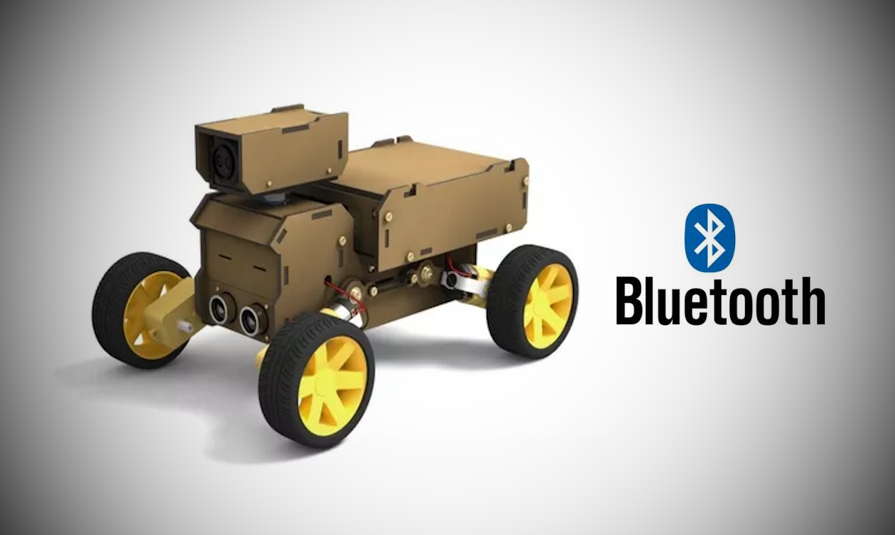
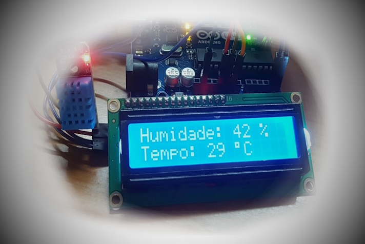
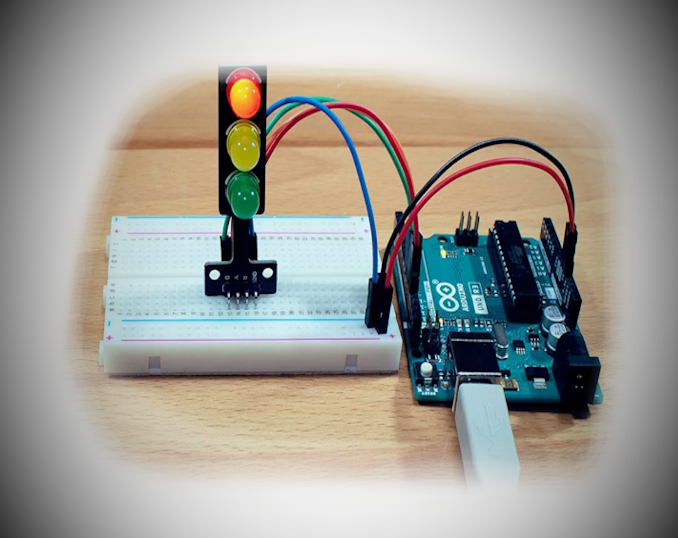

Meus projetos

Carrinho-Espião movido no Bluetooth.
Este projeto é um carrinho que é movido pela via Bluetooth controlado pelo Celular, ele pode observar na câmera do carrinho dentro do programador, é funcional e prático.

Arduino com sensor de Umidade e Temperatura.
Este projeto vem com sensor de umidade onde que você assopra na peça e mostra a tela que aparece quantos de porcento tem a umidade e a temperatura.

Arduino configurado utilizando Semáforo.
E por fim, este projeto mostra toda a configuração do semáforo como nas ruas da cidade, muito simples e prático.